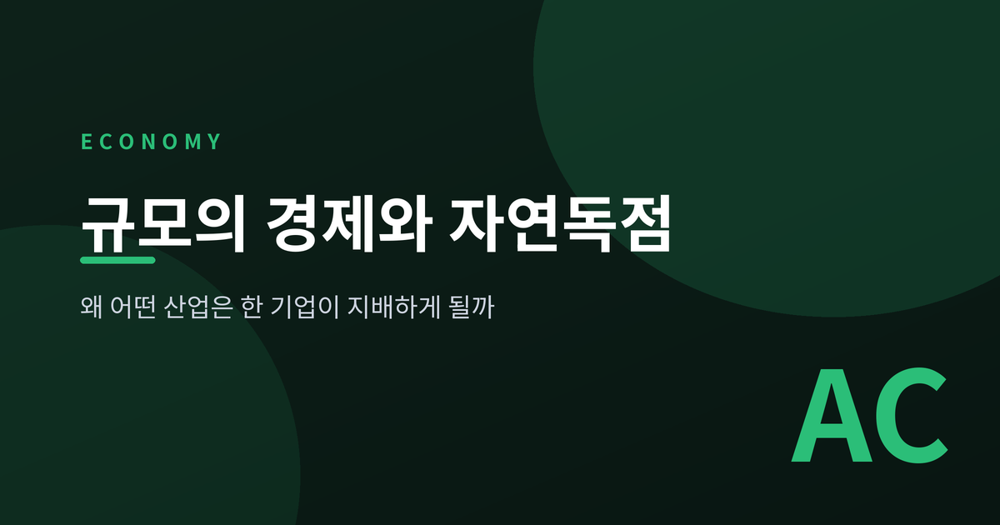
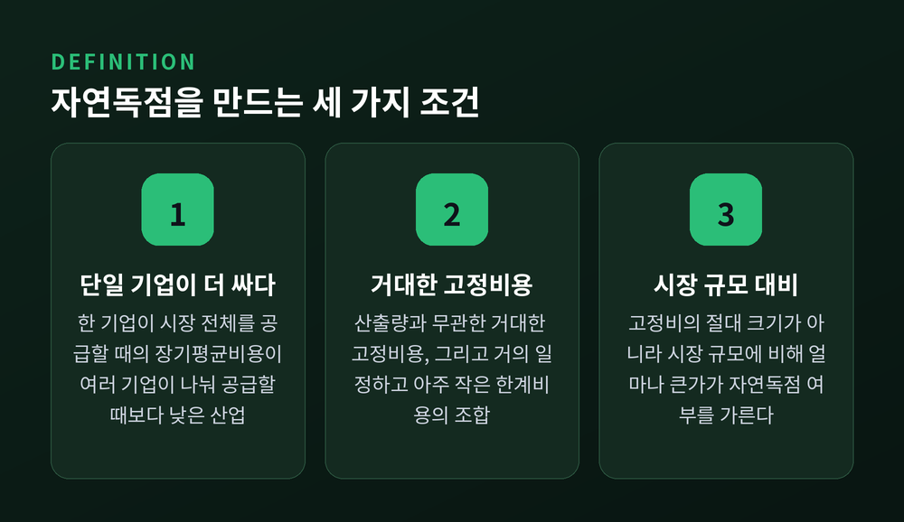
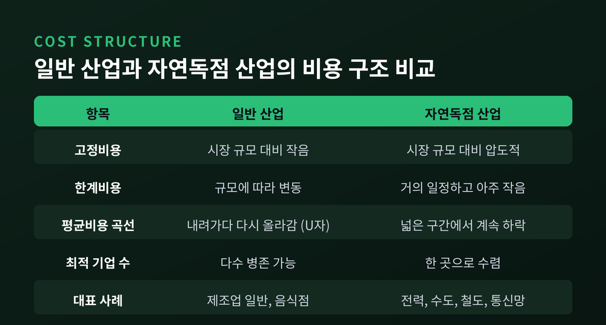
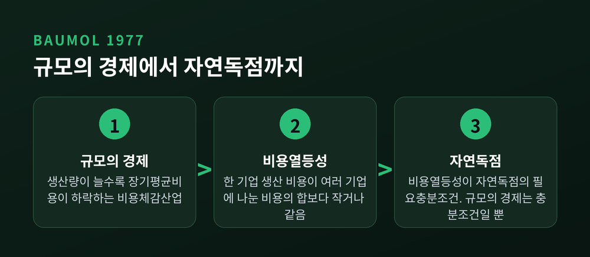
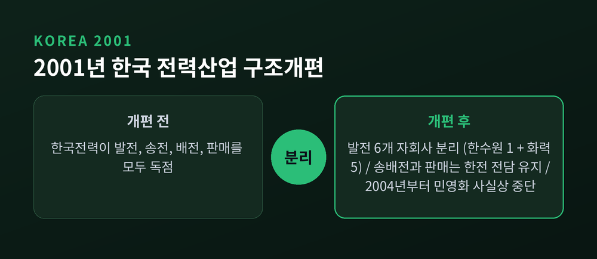
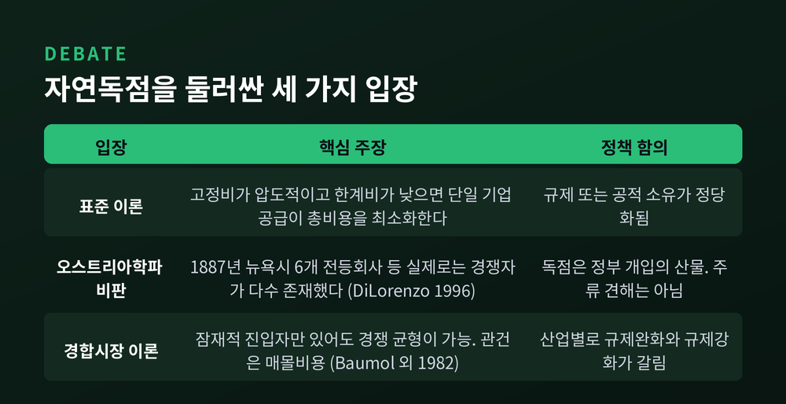

이번 글에서는 자연독점이 왜 생기는지를 정리해 보겠습니다.
전기도 수도도 철도도, 우리 주변의 필수 서비스는 대부분 한 곳이 도맡고 있습니다. 담합이나 반칙 때문이 아니라 비용 구조 자체가 그런 결과를 만든다는 것이 오늘의 이야기입니다.
먼저 결론부터 말씀드립니다. 자연독점은 "한 기업이 전부 공급하는 편이 실제로 더 싼" 산업에서 발생합니다. 원인은 거대한 고정비용과 거의 0에 가까운 한계비용입니다. 그리고 이 조건은 영원하지 않습니다.
자연독점(natural monopoly)의 정의는 생각보다 엄격합니다.
단일 기업이 시장 전체를 공급할 때의 장기평균비용이, 여러 기업이 나눠 공급할 때보다 낮은 산업을 말합니다. 영어 위키백과가 인용한 퍼로프(Perloff)의 『Microeconomics』 정의가 그렇습니다.
여기서 중요한 것은 '나쁘다'는 판단이 아니라는 점입니다. 독점이 시장 조작의 결과가 아니라, 비용 곡선이 만들어낸 자연스러운 귀결이라는 뜻입니다.
KDI 경제교육·정보센터의 설명도 같은 결을 지닙니다. 이주석 호서대 교수는 "규모의 경제 효과를 누리는 회사의 평균비용 최소점에서의 생산량이 시장의 수요를 충분히 감당한다면 자연적으로 독점이 된다"고 정리합니다.
이 개념은 최근에 생긴 것이 아닙니다. 이미 19세기에 자연독점은 시장실패의 잠재적 원인으로 인식되었습니다. 존 스튜어트 밀은 이런 산업을 정부가 규제해 공익에 봉사하게 만들자고 주장했습니다.

일반 산업의 비용 곡선은 U자를 그립니다.
규모가 커지면 평균비용이 내려갑니다. 그러다 어느 지점부터 다시 올라갑니다. 인력이 과로하고, 관료주의가 끼어들고, 비효율이 쌓이기 때문입니다.
자연독점 산업의 비용 구조는 전혀 다릅니다.
산출량과 무관한 거대한 고정비용이 있고, 한 단위를 더 만드는 한계비용은 거의 일정하며 아주 작습니다. 그래서 평균비용 곡선이 아주 넓은 산출 구간에서 계속 내려갑니다.
전력이 교과서적인 사례입니다. 발전소를 짓고 전력공급망을 까는 데는 큰돈이 듭니다. 그러나 설치가 끝나면 사용자가 늘수록 평균 생산비가 급감합니다. 거대한 고정비용이 많은 사용자에게 분산되기 때문입니다. 어느 단계를 지나면 평균비용은 아주 낮은 수준에 머무릅니다.
여기서 흔한 오해를 하나 정리하겠습니다. 관건은 고정비의 절대 크기가 아닙니다. '시장 규모에 비해 고정비가 얼마나 큰가'입니다. 기업의 평균비용 최소점 생산량이 시장 전체 수요를 감당할 만큼 크다면, 그 시장은 자연독점입니다.
그래서 후발 주자는 이길 수가 없습니다. 똑같이 발전소와 공급망을 지어야 하는데, 사용자가 크게 늘지 않으면 평균비용이 선발 주자보다 훨씬 높습니다. 경쟁 송전망을 새로 까는 고정비는 어마어마한데, 기존 사업자의 한계 송전비용은 극히 낮습니다. 사실상 넘을 수 없는 진입장벽입니다.

여기서 한 걸음 더 들어가겠습니다.
많은 글이 규모의 경제와 자연독점을 같은 말처럼 씁니다. 정확하지 않습니다.
윌리엄 보멀(William Baumol)이 1977년 『American Economic Review』 67권(809~822쪽)에 실은 논문에서 현재 통용되는 형식적 정의를 제시했습니다. 그의 정의는 이렇습니다 — "다수 기업 생산이 독점 생산보다 비용이 더 많이 드는 산업."
보멀은 이 정의를 수학 개념인 비용열등성(subadditivity)에 연결했습니다. 비용함수가 subadditive하다는 것은, 하나의 기업이 산출물 묶음 전체를 생산하는 비용이 그 생산을 여러 기업에 쪼개 맡겼을 때 비용의 합보다 작거나 같다는 뜻입니다.
그리고 이 비용열등성이 자연독점의 필요충분조건입니다. 규모의 경제가 아니라요.
차이는 이렇게 갈립니다.
정리하면, 규모의 경제는 자연독점을 만드는 가장 흔한 경로일 뿐 유일한 경로가 아닙니다.
자연독점의 원천은 보통 두 가지로 봅니다. 하나는 방금 본 규모의 경제입니다. 다른 하나는 범위의 경제입니다. 한 기업이 여러 제품을 함께 생산하는 비용이 여러 기업이 따로 생산하는 비용보다 낮은 경우입니다. 이때 단독 생산 기업은 단위 원가가 높아 손실을 보고, 결국 철수하거나 합병되어 독점이 만들어집니다. 새뮤얼슨과 노드하우스도 범위의 경제가 자연독점을 낳을 수 있다고 지적했습니다.

요즘 플랫폼 이야기가 나오면 곧바로 자연독점이라는 말이 붙습니다. 여기도 구분이 필요합니다.
규모의 경제는 공급 측 현상입니다. 생산량이 늘수록 공급자의 평균비용이 내려갑니다.
네트워크 효과는 수요 측 대응물입니다. 공급자의 평균비용을 낮추는 것이 아니라, 고객의 지불용의를 높입니다. 그래서 '수요 측 규모의 경제(demand-side economies of scale)'라고도 부릅니다. 사용자 기반이 커질수록 제품의 가치가 올라가는 현상입니다.
방향이 반대인 셈입니다. 한쪽은 원가를 내리고, 한쪽은 가치를 올립니다.
그렇다면 네트워크 효과는 자연독점을 만들까요.
리보위츠와 마골리스의 정리에 따르면, 네트워크 효과 그 자체는 일반적으로 자연독점형 결과를 낳기에 충분하지 않습니다. 기업들이 서로 호환되지 않는 제품을 만들고 네트워크 효과가 호환 제품군 안에서만 작동한다면 큰 기업이 유리해질 가능성은 있습니다. 그러나 자동으로 자연독점이 되지는 않습니다.
다만 상당한 네트워크 효과가 실효적인 진입장벽으로 작동해 어느 정도 독점력을 만든다는 점은 별개로 인정됩니다.
자연독점이 효율적이라 해도, 그 지위를 남용하는 일은 별개 문제입니다.
특히 전기처럼 거절이 사실상 불가능한 필수재는 독점이 '포획된 시장(captive market)'을 만듭니다. 소비자에게 선택지가 없다는 뜻입니다.
극단적 사례가 있습니다. 2000년 볼리비아 코차밤바 물 분쟁입니다. 상수도 독점 기업이 댐 건설 재원을 마련하려고 수도 요금을 과도하게 올렸고, 많은 사람이 필수재인 물을 감당할 수 없게 됐습니다. 규제 없는 독점 가격 결정권이 어떤 결과를 낳는지 보여준 장면이었습니다.
그래서 각국은 여러 방식을 씁니다.
| 방식 | 내용 |
|---|---|
| 총괄원가보상 규제 | 회계상 원가에 정상 이윤율을 얹어 정부가 가격 상한을 정함 |
| 규제된 독점 | 투자에 대한 수익률을 보장하는 대신 소비자 가격을 고정 |
| 국유화·공기업화 | 2차 대전 이후 유럽 전역의 국유화 물결로 국영기업 설립 |
| 망 분리(언번들링) | 송전 독점은 유지하되 외부 사업자에게 망 접근 허용 |
미국 소매 전력 시장이 마지막 방식의 사례입니다. 프랜차이즈 유틸리티는 송전 독점을 유지하되, 요금을 언번들링해 원가에 합리적 수익을 더한 수준으로 상한을 두고, 외부 발전·판매 사업자에게 자기 전선망 접근을 허용해야 했습니다.
한계도 함께 적겠습니다. 국유화가 만능은 아니었습니다. 일부 정부는 국영 유틸리티를 다른 정부 활동의 현금흐름원이나 경화 확보 수단으로 썼습니다. KDI도 같은 지점을 짚습니다 — 자연독점 기업은 경쟁 압박에서 자유롭기 때문에, 안정적 수요처와 관료주의로 인한 비효율이 생길 수 있다고요.
규제 바깥의 대안도 있습니다. 웹의 오픈소스 아키텍처는 거대한 성장을 이끌면서도 한 기업의 시장 전체 지배를 피했습니다. 미국 증권업계 청산·결제의 대부분을 담당하는 DTCC는 협동조합 형태여서, 시장지위를 남용해 비용을 올릴 수 없는 구조입니다.
한국에도 자연독점을 실제로 쪼갠 사례가 있습니다.
2001년 4월, 「전력산업 구조개편 촉진에 관한 법률」에 따라 한국전력에서 발전 부문이 분리됐습니다. 한국수력원자력 1개사와 화력발전 5개사(한국남동발전·한국동서발전·한국남부발전·한국중부발전·한국서부발전), 모두 6개 발전자회사입니다.
자회사를 왜 하필 6개로 정했을까요. 국가기록원 기록에 따르면 규모의 경제와 담합 방지를 함께 고려한 결과였습니다. 너무 잘게 쪼개면 규모의 경제를 잃고, 너무 크게 두면 담합 위험이 커집니다.
가장 눈여겨볼 대목은 무엇을 쪼개고 무엇을 남겼는가입니다.
구조개편 이전 한전은 발전·송전·배전·판매를 모두 독점했습니다. 개편 이후에도 송·배전 및 판매는 여전히 한전이 전담합니다. 다시 말해 경쟁이 가능한 부문(발전)만 떼어내고, 자연독점성이 강한 망(송·배전)은 통합 상태로 남긴 것입니다.
원리를 그대로 정책에 옮긴 설계입니다.
결과는 절반의 성공이었습니다. 발전자회사 민영화 과정은 많은 어려움에 부딪혔고, 2004년부터 민영화 추진은 사실상 중단된 상태입니다.

여기서 오해를 하나 더 풀어야겠습니다. 자연독점은 고정된 상태가 아닙니다.
미국 통신이 그 증거입니다.
1913년 킹스버리 합의(Kingsbury Commitment) 이래 AT&T는 미국 정부로부터 자연독점 전화 사업자 지위를 허용받았습니다. 조건은 보편적 서비스와 모든 소비자에 대한 기본 연결 제공이었습니다.
효과는 압도적이었습니다. 1982년 기준 미국 전화선의 80~85%가 AT&T 통제 아래 있었습니다.
그런데 끝났습니다.
이유는 규제 당국의 변덕이 아니었습니다. 새로운 기술과 새로운 사업모델이 등장하면서 비용 구조 자체가 바뀌었기 때문입니다. 법무부의 분할안은 1974년부터 제안됐습니다.
1982년 1월 8일, AT&T와 법무부가 수정최종판결(MFJ) 동의명령에 합의했습니다. 해럴드 그린 판사가 관장했습니다. 핵심은 세 가지였습니다.
소송은 1982년 8월 24일 각하됐고, 분리는 1984년 1월 1일 시행됐습니다.
소비자가 체감한 변화는 뚜렷했습니다. 수많은 기업이 만든 새 전화기기 — 자동응답기, 디자인 핸드셋 — 가 쏟아졌고, 스프린트와 MCI 같은 회사가 장거리 서비스에서 경쟁 옵션을 내놨습니다.
예전엔 통신망 하나에 한 회사였습니다. 지금은 사설망과 특화 사업자들이 기존 유틸리티를 밀어붙입니다. 전력·통신·가스 모두에서 같은 압력이 관찰됩니다.
KDI의 문장도 이 점을 미리 짚어두었습니다 — 전력 수요가 급속히 늘어 민간 진입이 가능해진다면, 전력시장은 자연독점시장에서 경쟁시장으로 바뀔 것이라고요.
균형을 위해 반대편 이야기도 적겠습니다.
자연독점은 교과서의 표준 개념입니다. 그러나 이론 자체를 부정하는 학파가 있습니다.
오스트리아학파의 토머스 딜로렌조(Thomas J. DiLorenzo)는 1996년 『The Review of Austrian Economics』 9권 2호에 「자연독점의 신화(The Myth of Natural Monopoly)」를 실었습니다. 그의 반례는 구체적입니다.
이른바 공익사업 산업에도 실제로는 수십 개의 경쟁자가 있었다는 것입니다. 딜로렌조는 한 생산자가 나머지 모두보다 낮은 장기평균총비용을 달성해 영구적 독점을 세웠다는 '자연독점 스토리'가 실현된 증거는 없다고 주장합니다.
다만 이 견해는 학계 주류가 아니라는 점을 분명히 적어둡니다. 오스트리아학파 계열의 관점입니다.
중간 지대도 있습니다. 보멀·팬저·윌리그가 1982년 제시한 경합시장 이론(contestable markets)입니다. 소수 기업이 공급하는 시장이라도 잠재적 진입자의 존재만으로 경쟁적 균형이 나타날 수 있다는 이론입니다. 진입이 자유롭고 퇴출에 비용이 없다면, 신규 진입자가 가격을 후려쳐 시장을 가져간 뒤 기존 사업자가 대응하기 전에 떠나는 '치고 빠지기(hit and run)'가 가능합니다.
핵심 변수는 매몰비용입니다. 진입에 상당한 매몰비용이 필요하면 진입은 되돌릴 수 없습니다. 그래서 자연독점은 가장 경합성이 낮은 시장입니다.
이 이론의 한계도 있습니다. 매몰비용과 진입·퇴출 장벽이 완전히 없는 시장은 현실에 거의 없습니다. 흥미로운 것은 보멀 자신의 태도입니다. 그는 이 이론에 근거해 어떤 산업에는 규제완화를, 다른 산업에는 더 많은 규제를 주장했습니다.

정리하면 이렇습니다.
자연독점은 누군가의 반칙이 아니라 비용 곡선의 모양이 만든 결과입니다. 거대한 고정비용, 낮은 한계비용, 그리고 시장 규모 대비 압도적인 최소효율규모 — 이 세 가지가 겹칠 때 시장은 한 기업에게 수렴합니다.
그러나 그 조건은 고정돼 있지 않습니다. 기술이 비용 구조를 바꾸면 어제의 자연독점은 오늘의 경쟁시장이 됩니다. AT&T가 그랬고, 한국의 발전 부문이 그랬습니다.
"자연독점은 산업의 운명이 아니라, 그 시점의 비용 구조가 내린 판정입니다."
그래서 이런 산업을 볼 때 물어야 할 질문은 하나로 좁혀집니다. 저 독점은 여전히 싼가, 아니면 이미 습관으로만 남았는가. 이 질문을 계속 던지는 일이 규제의 본령이라고 생각합니다.